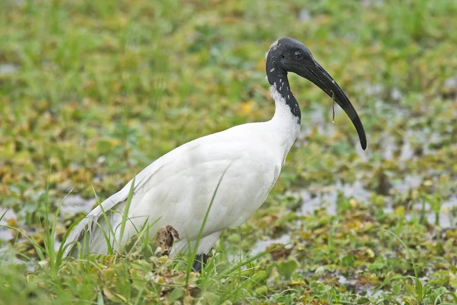

鸟类 · 动物界
黑头白鹮 Threskiornis melanocephalus

头颈黑色裸露、身体洁白的东方鹮类，喙长而下弯，因种群稀少在中国属国家一级保护动物，全球列为近危。
- 分类
- 门脊索动物门纲鸟纲目鹈形目科鹮科属白鹮属
- 栖息环境
- 水田、沼泽、湖泊、河滩与沿海湿地，常在浅水中探食
- 地理分布
- 南亚、东南亚和东亚，中国南方和东部有罕见记录
- 保护级别
- IUCN 近危（NT）；中国国家一级保护动物
物种志
黑头白鹮体长 65–75 cm，体重 600–900 g。它的身体羽毛洁白，头部和颈部裸露，皮肤呈黑色，喙长而向下弯曲、呈黑色，腿黑色，飞行时翼端可见黑色飞羽。它站立时颈部伸长，姿态沉稳，常在浅水中缓慢走动觅食。
黑头白鹮分布于南亚、东南亚和东亚，中国南方和东部有分布记录，多为罕见旅鸟或夏候鸟。它们栖息在水田、沼泽、湖泊和河滩，用下弯的长喙在浅水和泥中探取鱼、虾、蛙类和昆虫。繁殖期在树上集群营巢，每窝产卵 2–4 枚，孵化 23–25 天。由于湿地减少和人为干扰，黑头白鹮在全球数量下降，被列为近危物种，中国将其列为国家一级保护动物。
形态与习性
- 食性鱼、虾、蛙类和昆虫
- 体长65–75 cm
- 体重600–900 g
- 繁殖每窝 2–4 枚卵，孵化 23–25 天
- 特征头颈裸露呈黑色，喙长而下弯
- 寿命野外约 15 年
趣味知识
- 黑头白鹮的头和颈部裸露呈黑色，与洁白的身体形成鲜明对比。
- 它用下弯的长喙在浅水泥沙中探取鱼虾，动作缓慢而专注。
- 黑头白鹮在中国十分罕见，被列为国家一级保护动物。